Снятие
Снятие колеса. Ссылка: Колеса и шины
Выполнить Подъем автомобиля. Ссылка: Подъем
Использовать Специальный инструмент для фиксации изнутри и вращения снаружи для Снятие гайки a переднего стабилизатора и передней соединительной тяги.
Крутящий момент: (120 ± 10) N.m
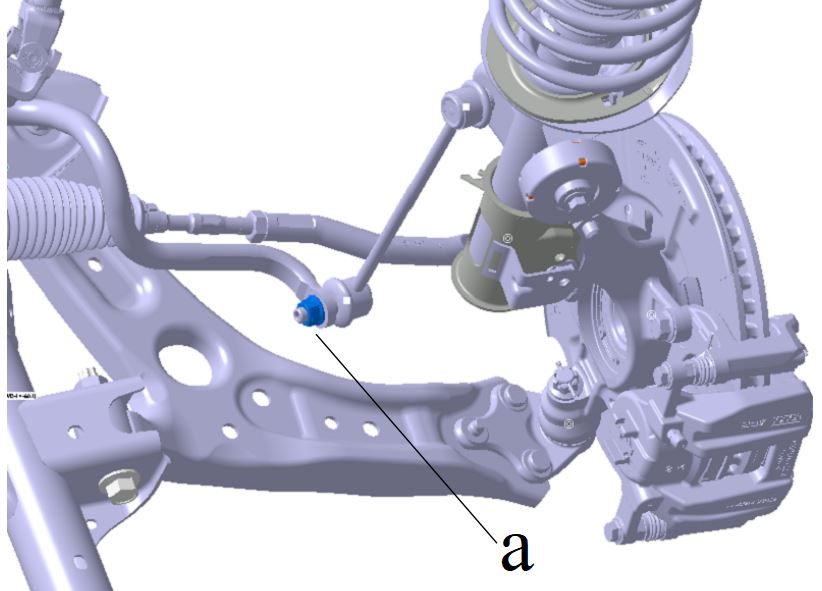
Выполнить Снятие гайки и шплинта b соединения рулевой тяги с поворотным кулаком.
Крутящий момент: (52 ± 3) N.m
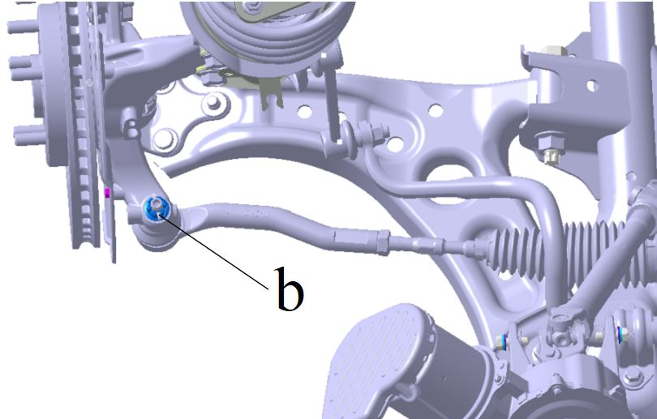
Выполнить Снятие гайки c соединения пальца шаровой опоры переднего рычага с передним рычагом.
Крутящий момент: (90 ± 5) N.m
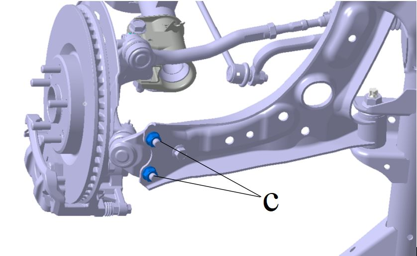
Выполнить Снятие болта d соединения пальца шаровой опоры переднего рычага с передним рычагом.
Крутящий момент: (120 ± 10) N.m
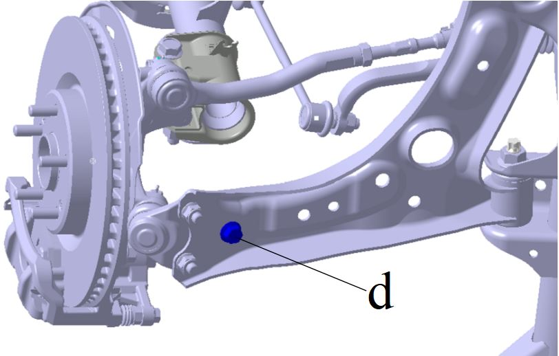
Выполнить Снятие болта e соединения задней опоры с кронштейном задней опоры.
Крутящий момент: (75 ± 7.5) N.m
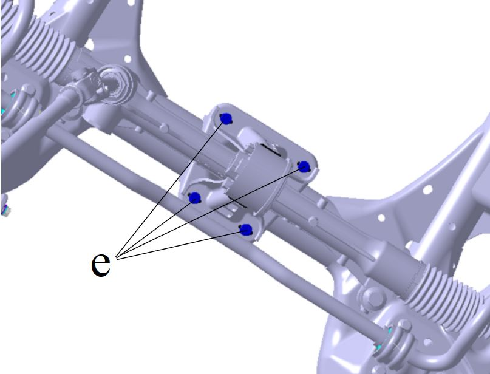
Выполнить Снятие болтов f крепления передней левой опоры и передней правой опоры.
Крутящий момент: (120 ± 12) N.m
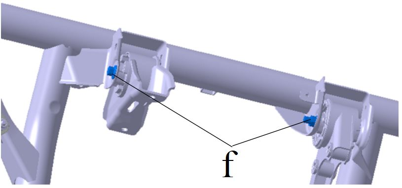
Выполнить Снятие болта g соединения рулевого механизма с рулевой колонкой. Ссылка: Механический рулевой механизм в сборе
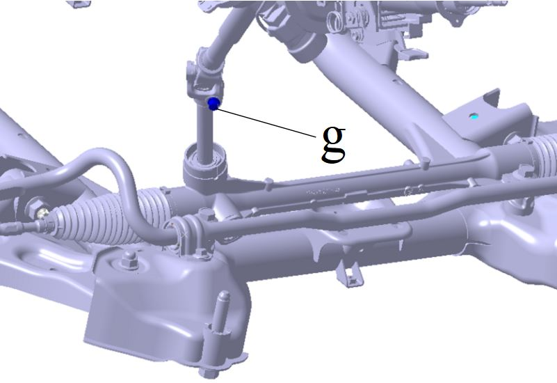
Нанести перекрестную разметку на контактных поверхностях 4 втулок крепления переднего подрамника в сборе к нижней части кузова.
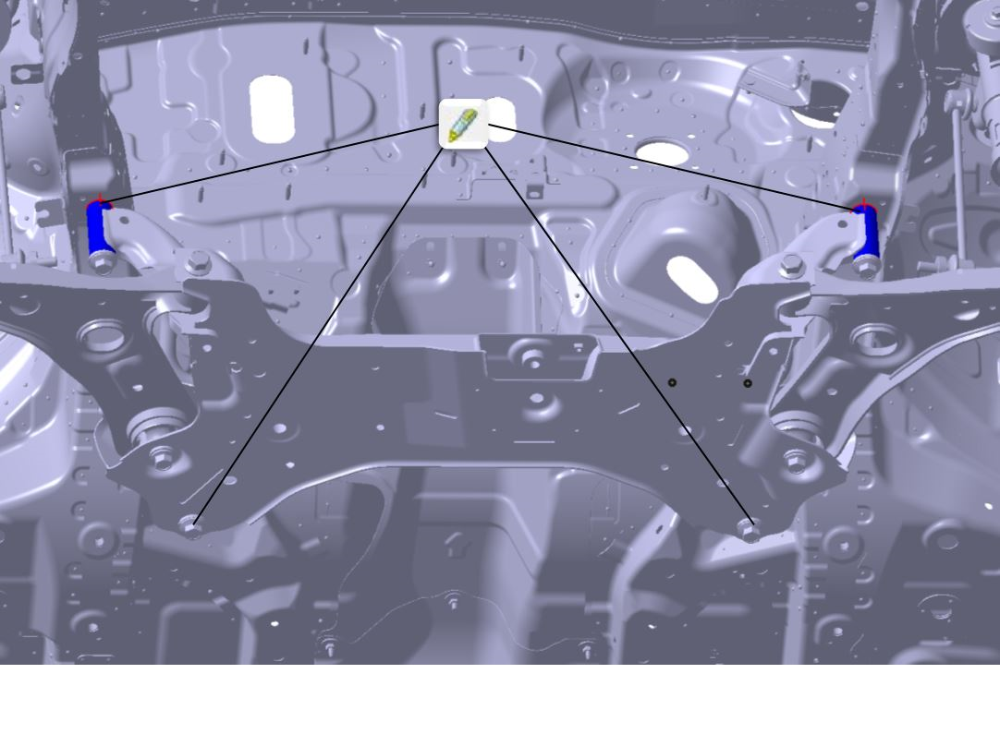
Использовать подъемное устройство с возможностью вертикального перемещения для Установка на опоры Передний подрамник в сборе.
Выполнить Снятие соединительных болтов h и i Передний подрамник в сборе.
Крутящий момент h: (200 ± 20) N.m;
Крутящий момент i: (270 ± 20) N.m.
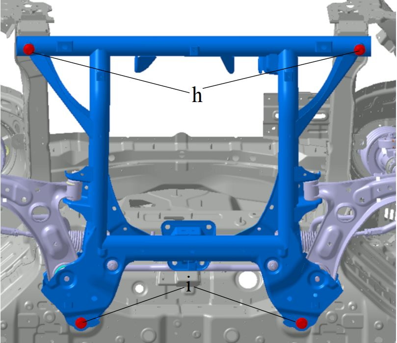
Выполнить Снятие Передний подрамник в сборе и его компонентов.
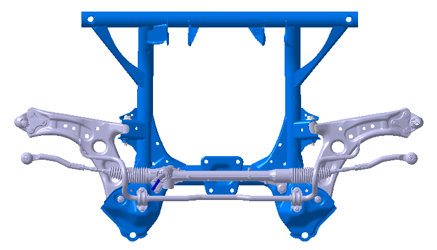
Выполнить Снятие рулевого механизма в сборе. Ссылка: Механический рулевой механизм в сборе
Выполнить Снятие Передний стабилизатор поперечной устойчивости в сборе и его принадлежностей. Ссылка: Передний стабилизатор поперечной устойчивости в сборе
Выполнить Снятие переднего рычага подвески в сборе. Ссылка: Передний рычаг подвески в сборе (втулка)
Узел мягкой подушки задней опоры представляет собой Передний подрамник в сборе.
Установка
Установка выполняется в порядке, обратном снятию.
Описание позиционирования при Установка без замены Передний подрамник в сборе.
(1) При Снятие в соответствии с описанием в п. 10 выполнить следующие разметочные линии на поверхностях контакта втулок Передний подрамник в сборе и нижней части кузова.
(2) При сборке Передний подрамник в сборе с нижней частью кузова визуально совместить разметочные линии, затем затянуть болты h и i.
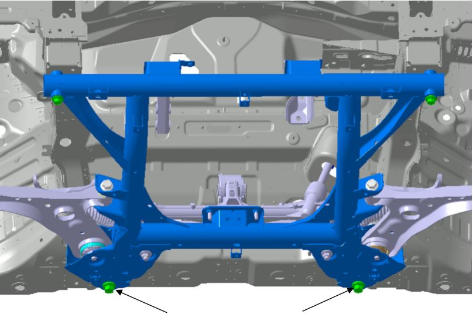
Описание позиционирования при Установка с заменой Передний подрамник в сборе.
(1) При Снятие нет необходимости выполнять разметочные линии в соответствии с п. 10 Снятие.
(2) При сборке Передний подрамник в сборе с нижней частью кузова сначала установить 2 установочных двурезьбовых болта i в 2 точки заднего крепления нижней части кузова.
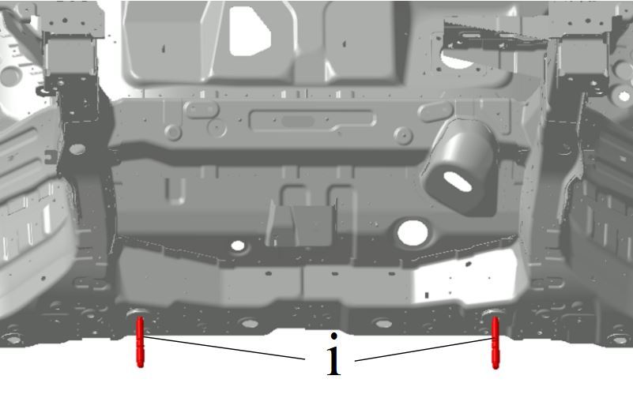
(3) Поднять Передний подрамник в сборе до совмещения с нижней частью кузова и двурезьбовыми болтами.
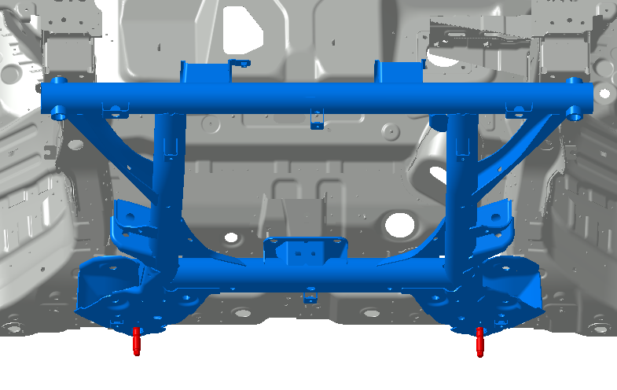
(4) Обеспечить прилегание передней и задней втулок Передний подрамник в сборе к монтажной поверхности нижней части кузова, удерживая это состояние, сначала установить и затянуть болты h в 2 точках переднего крепления подрамника.
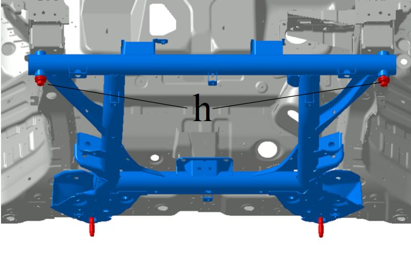
(5) Выкрутить 1 двурезьбовой болт в задней точке, установить 1 болт i и затянуть.
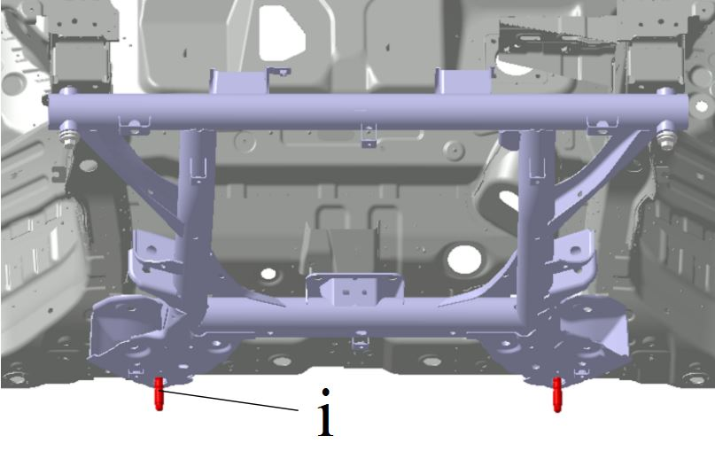
（6）再拆取另1颗后点双头螺柱，装最后1颗螺栓i并打紧。
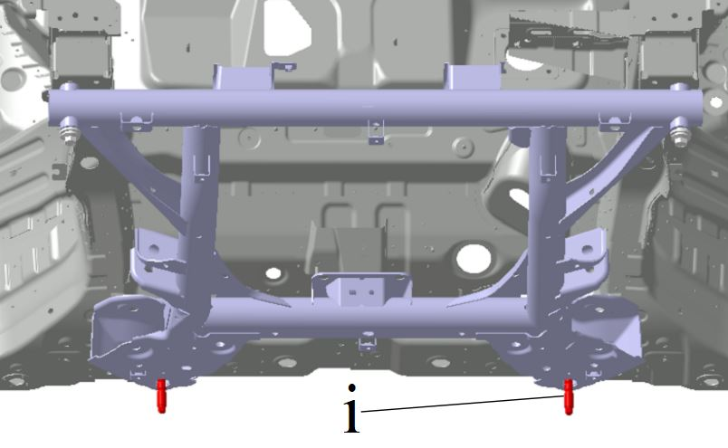
Регулировка углов установки колес.
Ссылка: Проверка параметров регулировки углов установки передних колес